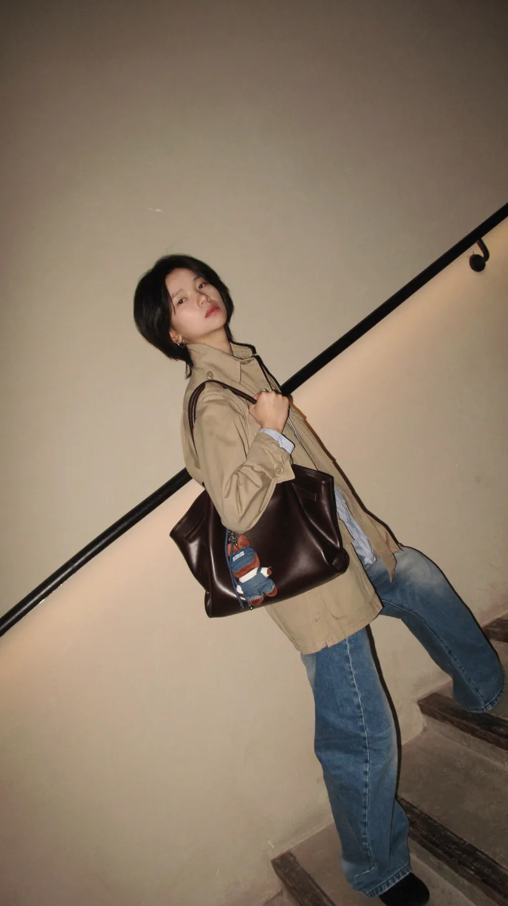

AI VIDEO
PORTFOLIO.
COMMERCIAL PRODUCTION
让卖点，先被看见。
千川商业广告
热点视觉前贴 · 季节主题 · 产品多场景素材
MY CONTRIBUTION
从素材整理到创意迭代，
搭建 AI 内容制作流程。
面对传统实拍素材同质化、AI 转型基础薄弱的问题，整理内容原料、测试工具与内容方向，将产品卖点和热点转化为多版本视觉前贴。
AI 工作流搭建
从工具测试、方向制定，到生成、筛选与剪辑整合。
项目 AI 视频月产量
推动 AI 内容专项落地，支撑团队高频素材需求。
PRODUCT IN DIFFERENT SCENES
同一产品，不同使用场景。
围绕产品图与包装信息，生成可供混剪的手持、展示与转场镜头。
重点检查瓶身轮廓、Logo、文字、颜色与手部动作，为不同视频开头和卖点版本整理可用镜头。
AI MICRO DRAMA
用一个故事，带入产品。
AI 微短剧广告
家庭情感 · 痛点反转 · 日常种草
在 10–15 秒里，
完成一次情绪转折。
面向护肤与口服美容消费人群，从生活冲突切入，通过正反打、微表情和节奏变化，串联故事与产品信息。
独立承担选题策划、分镜设计、提示词迭代、AI 画面生成与后期剪辑。支持原创 Brief 与参考素材拆解两条制作路径。
EDUCATIONAL VIDEO
把抽象知识，转成画面。
科普长视频制作统筹
脚本视觉化 · 风格统一 · 多轨剪辑包装
从编导脚本出发，将文案转化为可生成、可衔接的视觉镜头，再整合画面、配音、字幕与音效。
- 需求与内容拆解将脚本文案调整为 AI 可执行的画面描述。
- 视觉参考与风格统一确定色调、美学基调与分镜参考。
- 镜头生成与筛选使用即梦生成分镜图，结合首尾帧制作动态镜头。
- 剪辑、包装与迭代整合 BGM、字幕、配音与音效，根据审核建议修改。
CONTENT WORKBENCH · VIBE CODING
把制作经验，沉淀成工具。
FrameFlow AI 导演台
电商 AI 素材工作流原型
从参考画面，
到可执行的导演方案。
将一线电商素材制作经验转化为结构化字段，通过 AI 辅助开发完成交互原型。
- 参考与产品分开约束
- 提取参考素材的场景、光线、构图等视觉语言，独立记录产品外观与包装要求。
- 静帧与视频分镜输出
- 支持视频三点抽帧，组织 0–2s、2–5s、5–8s 三段镜头方案。
- 人工校对与导出
- 调整拆解字段，同步重建提示词，复制或导出 TXT / JSON。
当前为浏览器本地模板原型，未接入真实视觉大模型，也不直接生成视频；演示品牌与插画为虚构素材。
查看个人职责与项目说明
个人职责：业务流程拆解、提示词字段设计、原型交互规划与 AI 辅助开发。
工作流：参考素材与产品档案 → 结构化导演方案 → 人工校对 → 外部生图 / 视频工具执行。
项目边界：用于展示工作流逻辑，真实模型识别质量与效率提升数据尚未验证；视频参考功能不包含音频理解。

ABOUT ME
你好，我是吴佳瑞。
关注 AIGC 在电商与商业内容中的应用，
也在持续探索故事、影像与工具之间的连接。
2025 年毕业于井冈山大学视觉传达设计专业。工作内容覆盖脚本拆解、分镜制作、提示词优化、AI 与实拍素材结合，以及剪辑与后期包装。
- 求职方向
- AI 视频制作 / 剪辑、AIGC 广告制作
- 工作地点
- 上海
- 到岗时间
- 随时到岗
LET’S MAKE SOMETHING
期待下一次，
一起做出好内容。
吴佳瑞AI VIDEO CREATOR